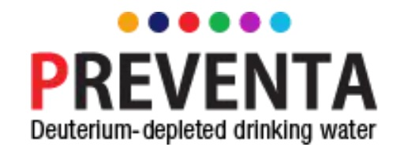

Helping prevent cancer and reduce its heavy toll on people and families has been
the driving force of my work and the work of Dr. Gabor Somlyai president of the
Preventa and the unquestioned leader in cancer treatments with
deuterium depleted water. We hope you will join us in supporting this important
research. Together we can stop cancer before it starts.
-Dr. T. Que Collins